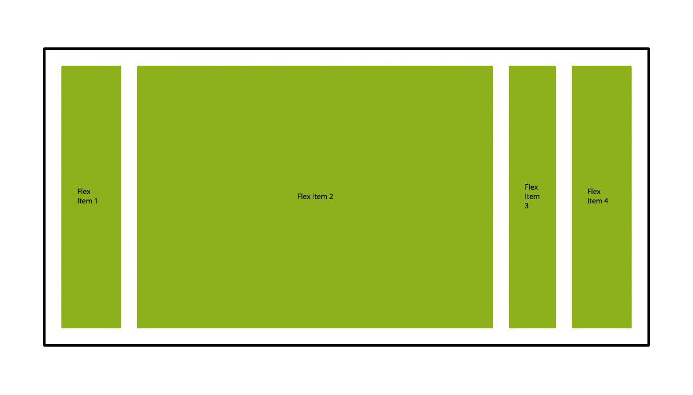
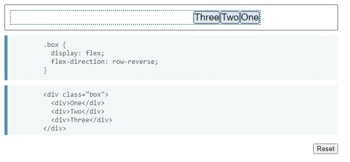

Como se menciono en el tema 1 el flexbox es el posicionamiento de contenido que uno le da a una pagina por medio de cajas flexibles las cuales se ordenan de una manera que tanto el desarrollador como el usuario logren ver un diseño agradable y mas que todo sea responsive.
 layout con flexbox
layout con flexbox
para empezar tenemos que pensar en términos de dos ejes, el eje principal y el eje cruzado. El eje principal está definido por la propiedad flex-direction, y el eje cruzado es perpendicular a este. Todo lo que hacemos con flexbox está referido a estos dos ejes.

imagen flexbox
Eje cruzado
va perpendicular al eje principal, y por lo tanto si flex-direction (del eje principal) es row o row-reverse el eje cruzado irá por las columnas.
 flex-direction:row para el eje cruzado
flex-direction:row para el eje cruzado
Si el eje principal es column o column-reverse entonces el eje cruzado corre a lo largo de las filas
 flex-direction:column para el eje cruzado
flex-direction:column para el eje cruzado
Display:flex
El area que posee un flexbox es llamada contendedor flex. Para crear un contenedor flex, establecemos la propiedad del área del contenedor display como flex o inline-flex. Tan pronto como hacemos esto, los hijos directos de este contenedor se vuelven ítems flex.
Es decir que los items se posicionaran uno al lado del otro.
 Ejemplo display:flex;
Ejemplo display:flex;
Flex-Direccion
la propiedad flex-direction en el contenedor flex nos permite cambiar la dirección de cómo los ítems son desplegados, veremos la utilizacion del flex-direction con la propiedad row-reverse:

Ejemplo de flex-direction:row-reverse;
 flex-direction:row
flex-direction:row
 flex-direction:column
flex-direction:column